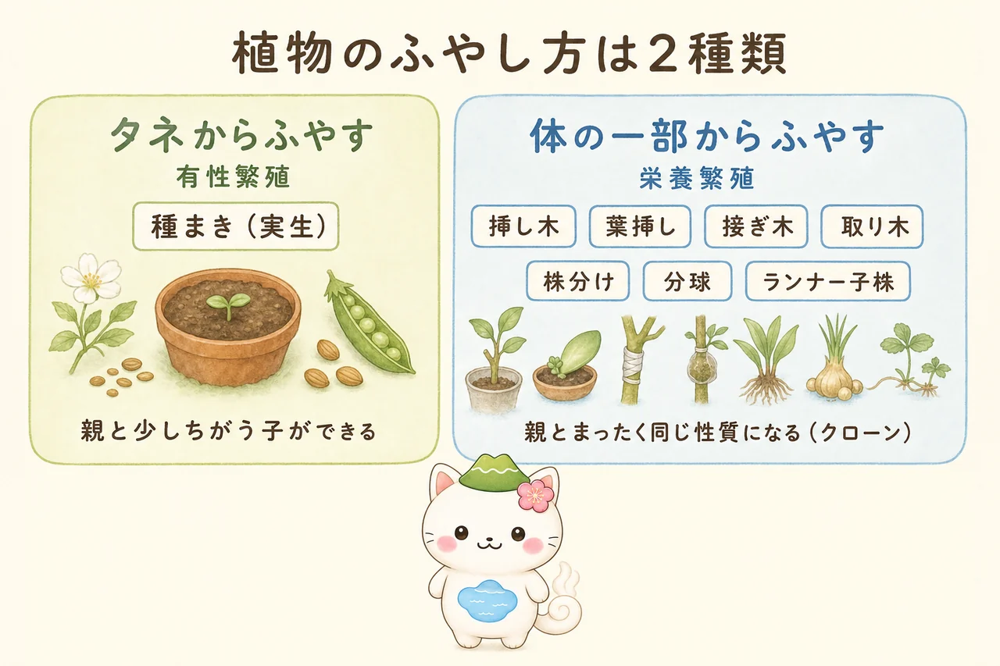
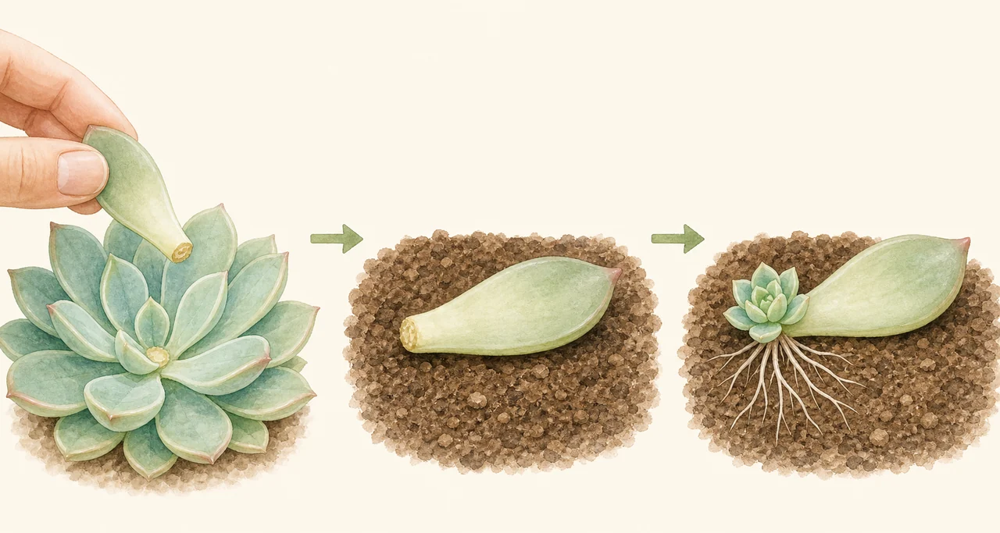
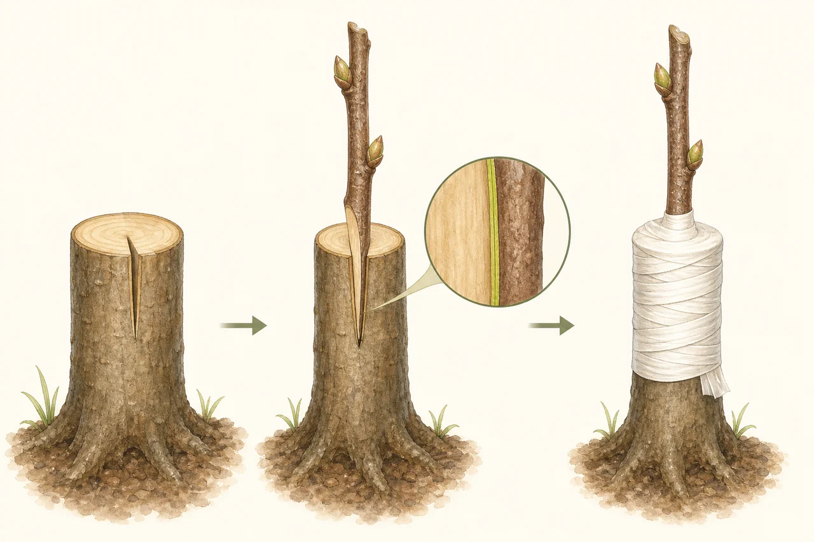
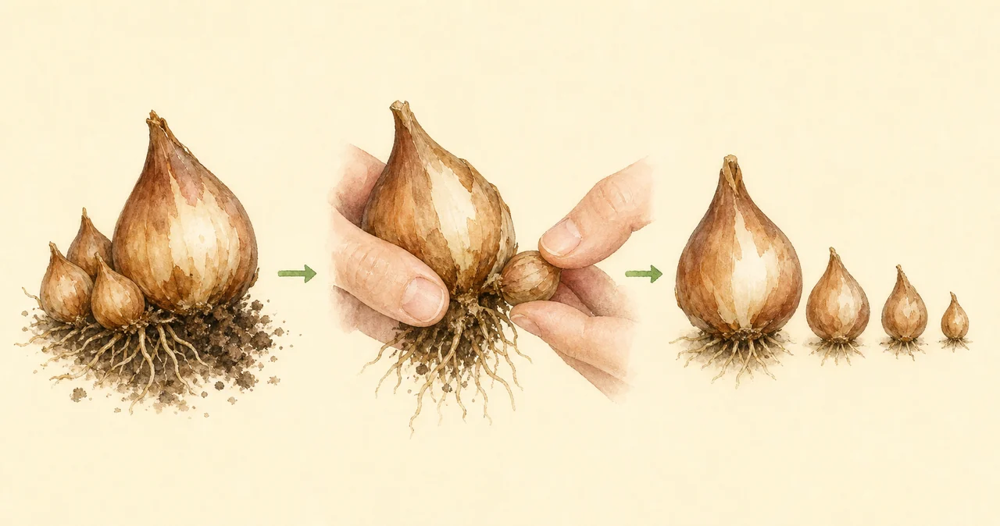
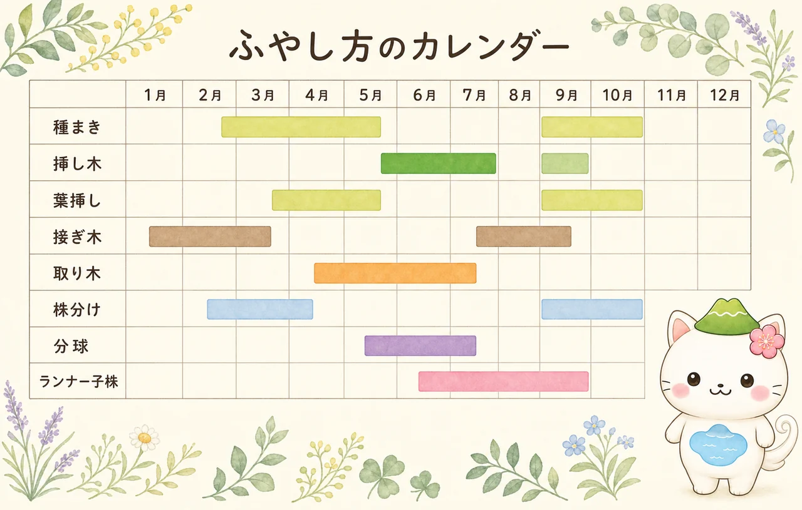

植物の増やし方
お気に入りの植物を、もうひと株。買い足さなくても、手元の株から増やせます。ただし方法は8種類あり、どれを選ぶかで結果がまったく変わります。とくに大きいのが「タネからか、体の一部からか」という分かれ道。ここを理解すると、なぜ挿し木では親と同じ花が咲き、種まきでは違う花が咲くのかが腑に落ちます。それぞれのやり方・適期・向く植物を、図解でまとめました。

🧬 まず知っておきたい「2種類」の増やし方
8つの方法は、タネを使うか使わないかで大きく2つに分かれます。この違いは単なる手順の差ではなく、できあがる株の性質そのものが変わるという決定的なものです。

- おしべとめしべの受粉でできたタネをまく方法。
- 親と性質がちがう子ができる。花色や樹形がばらつく。
- 一度にたくさん増やせる。安上がり。
- 時間がかかる（樹木なら開花まで数年〜十数年）。
- 親の病気を引き継ぎにくい。
- 枝・葉・根・球根など、体の一部から新しい株をつくる。
- 親とまったく同じ性質（クローン）になる。
- 親がすでに大人なので開花・結実までが早い。
- 一度に増やせる数は限られる。
- 親がウイルス病だと、それも引き継いでしまう。
「実生（みしょう）のサクラは親と同じ花が咲かない」「果樹の苗はほとんどが接ぎ木」——どちらもこの違いが理由です。お気に入りの株をそのまま増やしたいなら、栄養繁殖。いろいろな個体が出るのを楽しみたいなら、種まきです。
🌾 タネからふやす
🌿 体の一部からふやす

挿し木
切った枝から根を出させる、栄養繁殖の代表格。梅雨どきが最大のチャンス。

葉挿し
葉1枚から株ができる。多肉植物やセントポーリアで使える、いちばん手軽な方法。

接ぎ木
2本の木をつなげる技。果樹の苗はほとんどこれ。形成層を合わせるのが全て。

取り木
枝を木につけたまま発根させる。挿し木がつきにくい種類でも成功しやすい。

株分け
いちばん簡単で失敗しにくい。植え替えのついでにできる、宿根草と観葉植物の定番。

分球
球根植物が自分で増やしてくれる。掘り上げて分けるだけ。

ランナー・子株
植物が勝手に伸ばしてくれた子株を受け止めるだけ。イチゴやオリヅルランで。
📅 ふやし方カレンダー
どの方法にも適期があります。植物が元気に活動している時期、あるいは休んでいる時期——方法によってねらう季節が違うので、まとめて見比べられるようにしました。

| 方法 | 適期 | むずかしさ | 向く植物 |
|---|---|---|---|
| 種まき | 3〜5月／9〜10月 | やさしい | 一年草・野菜・草花全般 |
| 挿し木 | 6〜7月（梅雨）／9月 | ふつう | アジサイ・ツツジ・バラ・観葉植物 |
| 葉挿し | 4〜5月／9〜10月 | いちばんやさしい | 多肉植物・セントポーリア・ベゴニア |
| 接ぎ木 | 2〜3月（切り接ぎ）／8〜9月（芽接ぎ） | むずかしい | 果樹・バラ・マツ・カエデ |
| 取り木 | 5〜7月 | ふつう | ゴムノキ・モミジ・ツバキ・観葉植物 |
| 株分け | 3〜4月／9〜10月 | やさしい | 宿根草・観葉植物・ラン |
| 分球 | 6〜7月（葉が枯れたころ） | やさしい | チューリップ・スイセン・ユリ |
| ランナー・子株 | 7〜9月 | やさしい | イチゴ・オリヅルラン・ユキノシタ |

はじめてなら「株分け」か「葉挿し」から。どちらもほとんど失敗しないの。次に「挿し木」を梅雨の時期にやってみる。接ぎ木は道具も技術も要るから、いちばん最後でいいんだよ。いきなり難しい方法に挑戦して「植物を増やすのは無理」と思ってしまうのが、いちばんもったいないからね。
🌡 どの方法にも共通する「うまくいくコツ」
方法は違っても、成功率を上げるポイントはほとんど共通しています。裏を返せば、失敗するときの理由も同じです。
- 清潔にする：はさみやナイフは使う前に拭く。用土は無菌で肥料の入っていないもの（鹿沼土・赤玉土・バーミキュライト）を使う。切り口から雑菌が入るのが最大の失敗要因です。
- 乾かさない、でも蒸らさない：根のない状態では水を吸えません。土は湿らせ、直射日光を避けた明るい日陰に置く。ただし密閉しすぎると腐ります。
- 元気な親株から採る：弱った株、病気の株から採った枝は根が出ません。よく日に当たって育った、充実した枝を選びます。
- いじらない：根が出たか気になって引き抜くのが、いちばんの失敗。せっかく出た根が切れます。新芽が動くまで待つのが正解です。
なお、切り口から根が出るしくみには植物ホルモンが関わっています。切られた植物が傷口にカルスという細胞のかたまりをつくり、そこから新しい根を出す——このあたりは 植物ホルモンと剪定 でくわしく解説しています。
⚖️ 増やす前に確認したいこと
植物には品種登録されているものがあります。育成者（品種を作り出した人）の権利が法律（種苗法）で守られており、ラベルやタグに「登録品種」「品種登録第○○号」「PVP」などと書かれています。
- 一般品種：品種登録されていないもの、登録期間が切れたもの、昔からある在来種。
- 身のまわりの植物の多くはこちらです。
- 増やした株を人にあげることもできます。
- 登録品種：ラベルに登録番号やPVPの表示があるもの。新しい品種のバラ、果樹、イチゴなど。
- 2022年4月から、農業者が収穫物から自家増殖する場合は育成者の許諾が必要になりました。
- 個人が家庭で楽しむ範囲を超えて、増やした株を販売・配布するのは権利侵害になります。
- 迷ったら、まずタグの表示を確認してください。
趣味で自分の庭の植物を増やして楽しむぶんには、多くの場合問題になりません。ただし「登録品種を増やしてフリマアプリで売る」といった行為は明確にNGです。判断に迷うときは、種苗を購入した販売店や育成者に問い合わせるのが確実です。